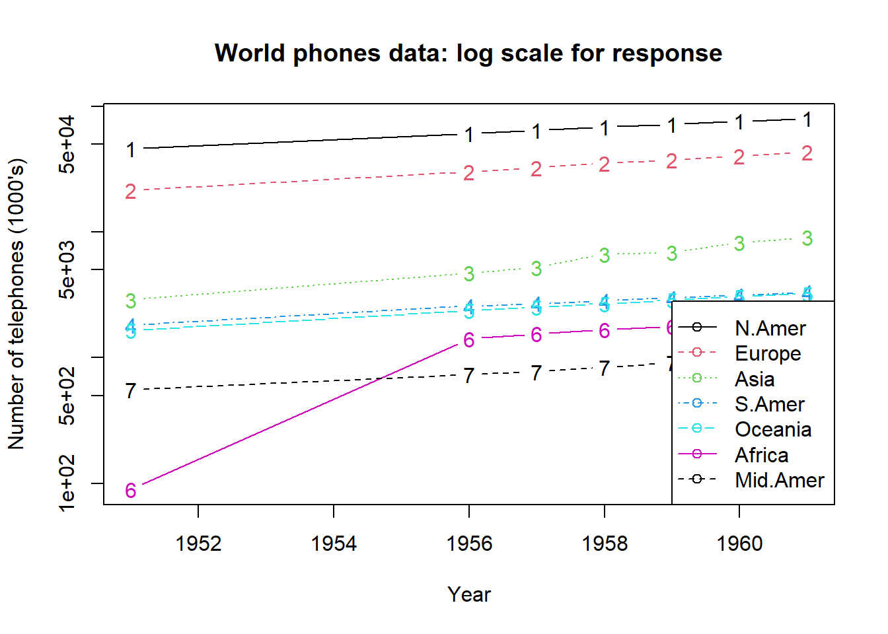

m1 <- matrix(1:12, ncol = 3, nrow = 4); m1 [,1] [,2] [,3]
[1,] 1 5 9
[2,] 2 6 10
[3,] 3 7 11
[4,] 4 8 12matrix() fonksiyonu kullanılmaktadır [,1] [,2] [,3]
[1,] 1 5 9
[2,] 2 6 10
[3,] 3 7 11
[4,] 4 8 12 [,1] [,2] [,3]
[1,] 1 2 3
[2,] 4 5 6
[3,] 7 8 9
[4,] 10 11 12t()Veri setleri iki boyutludur.
R’da bir çok fonksiyonun veri setleri ile çalışmaktadır.
Veri setleri R ortamında data.frame() fonksiyonu ile oluşturulabilir.
data.frame() fonksiyonu ile aynı uzunluktaki vektörlerden bir veri seti oluşturulabilir.
ad <- c("Ali","Elif","Su","Deniz","Aras", "Berk","Can","Ece","Efe","Arda")
boy <- c(160,165,170,155,167,162, 169,158,160,164)
kilo <- c(55,55,57,50,48,65, 58,62,45,47)
beden <- c("S","M","S","M","S", "L","M","L","S","S")
beden <- factor(beden)
(df <- data.frame(ad,boy, kilo, beden)) ad boy kilo beden
1 Ali 160 55 S
2 Elif 165 55 M
3 Su 170 57 S
4 Deniz 155 50 M
5 Aras 167 48 S
6 Berk 162 65 L
7 Can 169 58 M
8 Ece 158 62 L
9 Efe 160 45 S
10 Arda 164 47 SError in data.frame(x, N): arguments imply differing number of rows: 4, 3data() fonksiyonu ile aktarılabilir.head(), son satırları ise tail() fonksiyonu ile incelenebilir. head() fonksiyonu olağan olarak ilk 6 satırı yazdırır. N.Amer Europe Asia S.Amer Oceania Africa Mid.Amer
1951 45939 21574 2876 1815 1646 89 555
1956 60423 29990 4708 2568 2366 1411 733
1957 64721 32510 5230 2695 2526 1546 773
1958 68484 35218 6662 2845 2691 1663 836
1959 71799 37598 6856 3000 2868 1769 911
1960 76036 40341 8220 3145 3054 1905 1008n argümanı ile ayarlanır. N.Amer Europe Asia S.Amer Oceania Africa Mid.Amer
1951 45939 21574 2876 1815 1646 89 555
1956 60423 29990 4708 2568 2366 1411 733 N.Amer Europe Asia S.Amer Oceania Africa Mid.Amer
1951 45939 21574 2876 1815 1646 89 555
1956 60423 29990 4708 2568 2366 1411 733
1957 64721 32510 5230 2695 2526 1546 773
1958 68484 35218 6662 2845 2691 1663 836
1959 71799 37598 6856 3000 2868 1769 911
1960 76036 40341 8220 3145 3054 1905 1008
1961 79831 43173 9053 3338 3224 2005 1076datasets paketinde yer alan veri setlerinde examples() bölümünde çeşitli örneklere yer verilmiştir. Örneğin example(WorldPhones)matplot(rownames(WorldPhones), WorldPhones, type = "b", log = "y",
xlab = "Year", ylab = "Number of telephones (1000's)")
legend("bottomright", colnames(WorldPhones), col = 1:6, lty = 1:5,
pch = rep(21, 7))
title(main = "World phones data: log scale for response")
data(veriseti, package="packagename") şeklinde ulaşılabilir.Kullanışlı olmasa da excel, spps gibi veri girişi sağlayan bir arayüz bulunmaktadır. Ancak kullanmanızı tavisye etmediğim için burada da vermedim.
View() fonkisyonu ile veri seti incelenebilir.
Veri setlerinde eleman seçme matrislerdeki gibidir.
df[satirindeks, sutunindeks]
[1] "Ali" "Elif" "Su" "Deniz" "Aras" "Berk" "Can" "Ece" "Efe"
[10] "Arda" [1] 160 165 170 155 167 162 169 158 160 164[1] 55data.frame), sütun elemanları yazdırıldığında ise vektör (vector) oluşmaktadır.data.frame) olarak yapılmak istenirse, drop argümanı FALSE değeri ile kullanılır.Veri seçim işlemi için subset() fonksiyonu kullanılabilir.
?subset bir fonksiyonu ilk daha kullanıyorsanız, mutlaka yardım sayfasını inceleyin.
subset(veriseti, kosul/Kosullar)
subset() fonksiyonun yardım sayfasındaki örnekleri inceleyebilirsiniz. Ozone Temp
42 NA 93
43 NA 92
69 97 92
70 97 92
75 NA 91
102 NA 92
120 76 97
121 118 94
122 84 96
123 85 94
124 96 91
125 78 92
126 73 93
127 91 93 Ozone Solar.R Wind Month Day
1 41 190 7.4 5 1
32 NA 286 8.6 6 1
62 135 269 4.1 7 1
93 39 83 6.9 8 1
124 96 167 6.9 9 1 ad boy kilo beden
1 Ali 160 55 S
3 Su 170 57 S
5 Aras 167 48 S
9 Efe 160 45 S
10 Arda 164 47 S$ operatörü ile [[]] operatörü ile cbind() fonksiyonları ile yapılabilmektedir. S1 S2
1 54 63.25208
2 37 53.37898
3 68 64.21049
4 30 66.41772
5 74 67.35835
6 23 52.88177$ operatörü ile sütun ekleme S1 S2 S3
1 54 63.25208 73
2 37 53.37898 76
3 68 64.21049 77
4 30 66.41772 61
5 74 67.35835 64
6 23 52.88177 61[[]] operatörü ile sütun ekleme
df2 veri setinin ilk üç sütunun rowMeans() fonksiyonu ile ortalamasının alınarak ort isimi ile veri setine eklenmesi
S1 S2 S3 ort
1 54 63.25208 73 63.42
2 37 53.37898 76 55.46
3 68 64.21049 77 69.74
4 30 66.41772 61 52.47
5 74 67.35835 64 68.45
6 23 52.88177 61 45.63cbind() fonksiyonu ile sütun ekleme S1 S2 S3 ort S4
1 54 63.25208 73 63.42 10
2 37 53.37898 76 55.46 10
3 68 64.21049 77 69.74 10
4 30 66.41772 61 52.47 10
5 74 67.35835 64 68.45 10
6 23 52.88177 61 45.63 10
7 21 68.64000 60 49.88 10
8 29 61.00421 60 50.00 10
9 1 68.77944 60 43.26 10
10 24 56.25531 73 51.09 10
11 52 53.49163 67 57.50 10
12 73 50.36331 61 61.45 10
13 40 68.61696 66 58.21 10
14 50 66.23220 77 64.41 10
15 0 58.32839 60 39.44 10
16 26 67.12803 68 53.71 10
17 28 56.59417 61 48.53 10
18 88 54.49986 63 68.50 10
19 71 64.22146 62 65.74 10
20 33 65.90877 72 56.97 10Veri setinden istenilen sütunun çıkarılabilir. Bu işlemi yapmak için iki farklı yol kullanılabilir.
- operatörü
NULL operatörüstr() fonksiyonundan yararlanılmaktadır.'data.frame': 10 obs. of 4 variables:
$ ad : chr "Ali" "Elif" "Su" "Deniz" ...
$ boy : num 160 165 170 155 167 162 169 158 160 164
$ kilo : num 55 55 57 50 48 65 58 62 45 47
$ beden: Factor w/ 3 levels "L","M","S": 3 2 3 2 3 1 2 1 3 3“df” veri seti 10 gözlemden, 4 değişken. Her bir değişkenin önünde $ operatörü olduğuna dikkat ediniz.
veri setinin incelenmek için kullanılabilecek diğer fonksiyon ise attributes()
data.frame() fonksiyonu içinde yapılabilir. isim boyolcum kiloolcum bedenolcum
1 Ali 160 55 S
2 Elif 165 55 M
3 Su 170 57 S
4 Deniz 155 50 M
5 Aras 167 48 S
6 Berk 162 65 L
7 Can 169 58 M
8 Ece 158 62 L
9 Efe 160 45 S
10 Arda 164 47 Snames() ya da colnames() fonksiyonlarıdır. speed dist
Min. : 4.0 Min. : 2.00
1st Qu.:12.0 1st Qu.: 26.00
Median :15.0 Median : 36.00
Mean :15.4 Mean : 42.98
3rd Qu.:19.0 3rd Qu.: 56.00
Max. :25.0 Max. :120.00 Liste cok esnek ve karmasik bir veri yapisidir. list() fonksiyonu ile olusturulur. Listelerde farkli turden yeri yapilari, farkli uzunlukta yer alabilir.
ad <- c("Ali","Elif","Su","Deniz","Aras","Berk","Can","Ece","Efe","Arda")
boy <- c(160,165,170,155,167,162,169,158,160,164)
kilo <- c(55,55,57,50,48,65,58,62,45,47)
# ad, boy ve kilo vektorleri ile liste olusturulmasi
liste <- list(ad,boy,kilo)
liste[[1]]
[1] "Ali" "Elif" "Su" "Deniz" "Aras" "Berk" "Can" "Ece" "Efe"
[10] "Arda"
[[2]]
[1] 160 165 170 155 167 162 169 158 160 164
[[3]]
[1] 55 55 57 50 48 65 58 62 45 47Bir listedeki tum bilesenleri ve turleri gormek icin str() fonksiyonu kullanilabilir.
List of 3
$ : chr [1:10] "Ali" "Elif" "Su" "Deniz" ...
$ : num [1:10] 160 165 170 155 167 162 169 158 160 164
$ : num [1:10] 55 55 57 50 48 65 58 62 45 47Listeler kendi icinde de farklı listeler barindirabilir. 2 bilesenli liste
List of 2
$ :List of 3
..$ : chr [1:10] "Ali" "Elif" "Su" "Deniz" ...
..$ : num [1:10] 160 165 170 155 167 162 169 158 160 164
..$ : num [1:10] 55 55 57 50 48 65 58 62 45 47
$ : num [1:3] 1 2 3Liste bilesenleri isimlendirilebilir. Listelerde bilesenler numara [[1]] ya da $ ile eleman secilir.
[[1]]
[1] "Ali" "Elif" "Su" "Deniz" "Aras" "Berk" "Can" "Ece" "Efe"
[10] "Arda"
[[2]]
[1] 160 165 170 155 167 162 169 158 160 164
[[3]]
[1] 55 55 57 50 48 65 58 62 45 47 [1] 55 55 57 50 48 65 58 62 45 47Isımlendirilmis listelerde ise bu islem $ operatoru ile yapilabilir.
$isim
[1] "Ali" "Elif" "Su" "Deniz" "Aras" "Berk" "Can" "Ece" "Efe"
[10] "Arda"
$boyolcum
[1] 160 165 170 155 167 162 169 158 160 164
$kiloolcum
[1] 55 55 57 50 48 65 58 62 45 47 [1] 55 55 57 50 48 65 58 62 45 47 [1] "Ali" "Elif" "Su" "Deniz" "Aras" "Berk" "Can" "Ece" "Efe"
[10] "Arda" [1] "Ali" "Elif" "Su" "Deniz" "Aras" "Berk" "Can" "Ece" "Efe"
[10] "Arda" Listeler, verileri organize etmenin ve mumkun oldugunca az sayida degisken adina sahip olmanin kullanisli bir yoludur. Listeler genellikle R’da istatistiksel analizlerin ciktisinda kullanilmaktadir. Ornegin regresyon analizinin ciktisinda yer alan nesne parametre kestirimlerini, artiklari, yordanan degerleri liste seklinde tutmaktadir. lm() fonksiyonlari regresyon icin kullanilir, fonksiyon içindeki ~ isareti oncesine bagimli degiskenler, sonrasina ise bagimsiz degiskenler eklenerek model kurulur.
require(stats); require(graphics)
fm1 <- lm(sr ~ pop15 + pop75 + dpi + ddpi, data = LifeCycleSavings)
summary(fm1)
Call:
lm(formula = sr ~ pop15 + pop75 + dpi + ddpi, data = LifeCycleSavings)
Residuals:
Min 1Q Median 3Q Max
-8.2422 -2.6857 -0.2488 2.4280 9.7509
Coefficients:
Estimate Std. Error t value Pr(>|t|)
(Intercept) 28.5660865 7.3545161 3.884 0.000334 ***
pop15 -0.4611931 0.1446422 -3.189 0.002603 **
pop75 -1.6914977 1.0835989 -1.561 0.125530
dpi -0.0003369 0.0009311 -0.362 0.719173
ddpi 0.4096949 0.1961971 2.088 0.042471 *
---
Signif. codes: 0 '***' 0.001 '**' 0.01 '*' 0.05 '.' 0.1 ' ' 1
Residual standard error: 3.803 on 45 degrees of freedom
Multiple R-squared: 0.3385, Adjusted R-squared: 0.2797
F-statistic: 5.756 on 4 and 45 DF, p-value: 0.0007904Regresyon sonuclarinin yer aldigi fm nesnesi bilesenleri
List of 12
$ coefficients : Named num [1:5] 28.566087 -0.461193 -1.691498 -0.000337 0.409695
..- attr(*, "names")= chr [1:5] "(Intercept)" "pop15" "pop75" "dpi" ...
$ residuals : Named num [1:50] 0.864 0.616 2.219 -0.698 3.553 ...
..- attr(*, "names")= chr [1:50] "Australia" "Austria" "Belgium" "Bolivia" ...
$ effects : Named num [1:50] -68.38 -14.29 7.3 -3.52 -7.94 ...
..- attr(*, "names")= chr [1:50] "(Intercept)" "pop15" "pop75" "dpi" ...
$ rank : int 5
$ fitted.values: Named num [1:50] 10.57 11.45 10.95 6.45 9.33 ...
..- attr(*, "names")= chr [1:50] "Australia" "Austria" "Belgium" "Bolivia" ...
$ assign : int [1:5] 0 1 2 3 4
$ qr :List of 5
..$ qr : num [1:50, 1:5] -7.071 0.141 0.141 0.141 0.141 ...
.. ..- attr(*, "dimnames")=List of 2
.. .. ..$ : chr [1:50] "Australia" "Austria" "Belgium" "Bolivia" ...
.. .. ..$ : chr [1:5] "(Intercept)" "pop15" "pop75" "dpi" ...
.. ..- attr(*, "assign")= int [1:5] 0 1 2 3 4
..$ qraux: num [1:5] 1.14 1.17 1.16 1.15 1.05
..$ pivot: int [1:5] 1 2 3 4 5
..$ tol : num 1e-07
..$ rank : int 5
..- attr(*, "class")= chr "qr"
$ df.residual : int 45
$ xlevels : Named list()
$ call : language lm(formula = sr ~ pop15 + pop75 + dpi + ddpi, data = LifeCycleSavings)
$ terms :Classes 'terms', 'formula' language sr ~ pop15 + pop75 + dpi + ddpi
.. ..- attr(*, "variables")= language list(sr, pop15, pop75, dpi, ddpi)
.. ..- attr(*, "factors")= int [1:5, 1:4] 0 1 0 0 0 0 0 1 0 0 ...
.. .. ..- attr(*, "dimnames")=List of 2
.. .. .. ..$ : chr [1:5] "sr" "pop15" "pop75" "dpi" ...
.. .. .. ..$ : chr [1:4] "pop15" "pop75" "dpi" "ddpi"
.. ..- attr(*, "term.labels")= chr [1:4] "pop15" "pop75" "dpi" "ddpi"
.. ..- attr(*, "order")= int [1:4] 1 1 1 1
.. ..- attr(*, "intercept")= int 1
.. ..- attr(*, "response")= int 1
.. ..- attr(*, ".Environment")=<environment: R_GlobalEnv>
.. ..- attr(*, "predvars")= language list(sr, pop15, pop75, dpi, ddpi)
.. ..- attr(*, "dataClasses")= Named chr [1:5] "numeric" "numeric" "numeric" "numeric" ...
.. .. ..- attr(*, "names")= chr [1:5] "sr" "pop15" "pop75" "dpi" ...
$ model :'data.frame': 50 obs. of 5 variables:
..$ sr : num [1:50] 11.43 12.07 13.17 5.75 12.88 ...
..$ pop15: num [1:50] 29.4 23.3 23.8 41.9 42.2 ...
..$ pop75: num [1:50] 2.87 4.41 4.43 1.67 0.83 2.85 1.34 0.67 1.06 1.14 ...
..$ dpi : num [1:50] 2330 1508 2108 189 728 ...
..$ ddpi : num [1:50] 2.87 3.93 3.82 0.22 4.56 2.43 2.67 6.51 3.08 2.8 ...
..- attr(*, "terms")=Classes 'terms', 'formula' language sr ~ pop15 + pop75 + dpi + ddpi
.. .. ..- attr(*, "variables")= language list(sr, pop15, pop75, dpi, ddpi)
.. .. ..- attr(*, "factors")= int [1:5, 1:4] 0 1 0 0 0 0 0 1 0 0 ...
.. .. .. ..- attr(*, "dimnames")=List of 2
.. .. .. .. ..$ : chr [1:5] "sr" "pop15" "pop75" "dpi" ...
.. .. .. .. ..$ : chr [1:4] "pop15" "pop75" "dpi" "ddpi"
.. .. ..- attr(*, "term.labels")= chr [1:4] "pop15" "pop75" "dpi" "ddpi"
.. .. ..- attr(*, "order")= int [1:4] 1 1 1 1
.. .. ..- attr(*, "intercept")= int 1
.. .. ..- attr(*, "response")= int 1
.. .. ..- attr(*, ".Environment")=<environment: R_GlobalEnv>
.. .. ..- attr(*, "predvars")= language list(sr, pop15, pop75, dpi, ddpi)
.. .. ..- attr(*, "dataClasses")= Named chr [1:5] "numeric" "numeric" "numeric" "numeric" ...
.. .. .. ..- attr(*, "names")= chr [1:5] "sr" "pop15" "pop75" "dpi" ...
- attr(*, "class")= chr "lm"psych paketinde fa() fonksiyonu ile gerceklestirilen analiz sonuclari
List of 46
$ residual : num [1:24, 1:24] 0.4452 -0.0348 -0.0152 0.0401 0.0145 ...
..- attr(*, "dimnames")=List of 2
.. ..$ : chr [1:24] "VisualPerception" "Cubes" "PaperFormBoard" "Flags" ...
.. ..$ : chr [1:24] "VisualPerception" "Cubes" "PaperFormBoard" "Flags" ...
$ dof : num 186
$ ENull : num NA
$ chi : num NA
$ rms : num 0.0408
$ nh : logi NA
$ EPVAL : num NA
$ crms : num 0.0497
$ EBIC : num NA
$ ESABIC : num NA
$ fit : num 0.903
$ fit.off : num 0.984
$ sd : num 0.04
$ factors : num 4
$ complexity : Named num [1:24] 1.03 1.04 1.23 1.25 1.05 ...
..- attr(*, "names")= chr [1:24] "VisualPerception" "Cubes" "PaperFormBoard" "Flags" ...
$ n.obs : logi NA
$ PVAL : logi NA
$ objective : num 1.72
$ criteria : Named num [1:3] 1.72 NA NA
..- attr(*, "names")= chr [1:3] "objective" "" ""
$ Call : language fa(r = Harman74.cor$cov, nfactors = 4, fm = "wls")
$ null.model : num 11.4
$ null.dof : num 276
$ r.scores : num [1:4, 1:4] 1 0.484 0.339 0.491 0.484 ...
$ R2 : num [1:4] 0.918 0.815 0.859 0.766
$ valid : num [1:4] 0.933 0.862 0.879 0.851
$ score.cor : num [1:4, 1:4] 1 0.627 0.485 0.493 0.627 ...
$ weights : num [1:24, 1:4] -0.02148 -0.00436 0.02699 0.00951 0.16055 ...
..- attr(*, "dimnames")=List of 2
.. ..$ : chr [1:24] "VisualPerception" "Cubes" "PaperFormBoard" "Flags" ...
.. ..$ : chr [1:4] "WLS1" "WLS3" "WLS2" "WLS4"
$ rotation : chr "oblimin"
$ hyperplane : Named num [1:4] 14 9 16 14
..- attr(*, "names")= chr [1:4] "WLS1" "WLS3" "WLS2" "WLS4"
$ communality : Named num [1:24] 0.555 0.227 0.344 0.349 0.642 ...
..- attr(*, "names")= chr [1:24] "VisualPerception" "Cubes" "PaperFormBoard" "Flags" ...
$ communalities: Named num [1:24] 0.561 0.22 0.356 0.349 0.648 ...
..- attr(*, "names")= chr [1:24] "VisualPerception" "Cubes" "PaperFormBoard" "Flags" ...
$ uniquenesses : Named num [1:24] 0.445 0.773 0.656 0.651 0.358 ...
..- attr(*, "names")= chr [1:24] "VisualPerception" "Cubes" "PaperFormBoard" "Flags" ...
$ values : num [1:24] 7.646 1.692 1.221 0.915 0.403 ...
$ e.values : num [1:24] 8.14 2.1 1.69 1.5 1.03 ...
$ loadings : 'loadings' num [1:24, 1:4] 0.0427 0.056 0.0874 0.1782 0.7639 ...
..- attr(*, "dimnames")=List of 2
.. ..$ : chr [1:24] "VisualPerception" "Cubes" "PaperFormBoard" "Flags" ...
.. ..$ : chr [1:4] "WLS1" "WLS3" "WLS2" "WLS4"
$ model : num [1:24, 1:24] 0.555 0.353 0.418 0.428 0.306 ...
..- attr(*, "dimnames")=List of 2
.. ..$ : chr [1:24] "VisualPerception" "Cubes" "PaperFormBoard" "Flags" ...
.. ..$ : chr [1:24] "VisualPerception" "Cubes" "PaperFormBoard" "Flags" ...
$ fm : chr "wls"
$ rot.mat : num [1:4, 1:4] 0.4887 -0.8531 -0.6178 -0.0472 0.2601 ...
$ Phi : num [1:4, 1:4] 1 0.41 0.295 0.408 0.41 ...
..- attr(*, "dimnames")=List of 2
.. ..$ : chr [1:4] "WLS1" "WLS3" "WLS2" "WLS4"
.. ..$ : chr [1:4] "WLS1" "WLS3" "WLS2" "WLS4"
$ Structure : 'loadings' num [1:24, 1:4] 0.361 0.241 0.29 0.369 0.794 ...
..- attr(*, "dimnames")=List of 2
.. ..$ : chr [1:24] "VisualPerception" "Cubes" "PaperFormBoard" "Flags" ...
.. ..$ : chr [1:4] "WLS1" "WLS3" "WLS2" "WLS4"
$ method : chr "regression"
$ R2.scores : Named num [1:4] 0.918 0.815 0.859 0.766
..- attr(*, "names")= chr [1:4] "WLS1" "WLS3" "WLS2" "WLS4"
$ r : num [1:24, 1:24] 1 0.318 0.403 0.468 0.321 0.335 0.304 0.332 0.326 0.116 ...
..- attr(*, "dimnames")=List of 2
.. ..$ : chr [1:24] "VisualPerception" "Cubes" "PaperFormBoard" "Flags" ...
.. ..$ : chr [1:24] "VisualPerception" "Cubes" "PaperFormBoard" "Flags" ...
$ fn : chr "fa"
$ Vaccounted : num [1:5, 1:4] 3.996 0.166 0.166 0.348 0.348 ...
..- attr(*, "dimnames")=List of 2
.. ..$ : chr [1:5] "SS loadings" "Proportion Var" "Cumulative Var" "Proportion Explained" ...
.. ..$ : chr [1:4] "WLS1" "WLS3" "WLS2" "WLS4"
$ ECV : Named num [1:4] 0.348 0.592 0.804 1
..- attr(*, "names")= chr [1:4] "WLS1" "WLS3" "WLS2" "WLS4"
- attr(*, "class")= chr [1:2] "psych" "fa"S1. Sırayla değişken adları TamSayi, OndalikSayi, Karakter, Mantıksal, Faktör olan 5 değişkenli hiçbir gözlemi olmayan bir data.frame oluşturmanızı ve bu data.framenin yapısını yazdırmanızı bekliyorum. Beklenen çıktı aşağıdaki gibi olmalıdır.
S2. Aşağıda size verilen dört vektörden bir veri seti oluşturunuz. Oluşturduğunuz veri setinin deneme sütunundaki eksik veri sayısını hesaplayan komut yazınız.
“Deneme sütunundaki NA sayısı:” [1] 4
https://www.gormanalysis.com/blog/r-introduction-to-factors-tutorial/
Lütfen aşağıdaki bölümleri haftaya kadar okuyunuz.
Veri düzenleme konusunda 🔗 DataEditR paketini inceleyiniz.